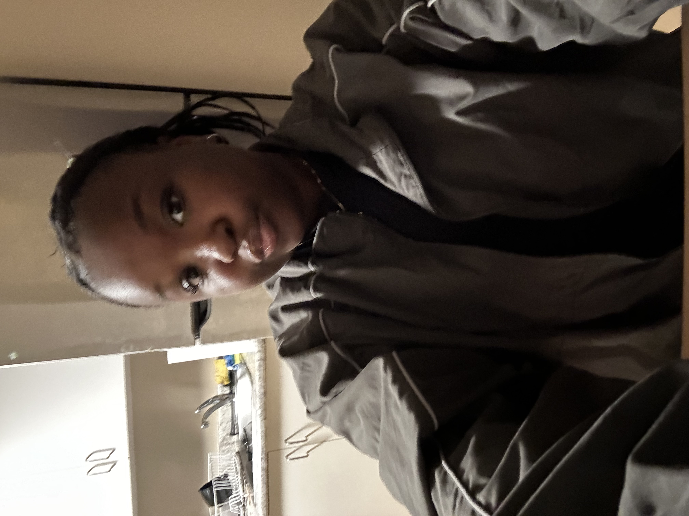

My name is Elyse Barker and I am a second Year student studying Digital Journalism at the University of Ottawa. Being 19, this starting year has come with it's many perks and academic challenges. Though outdoor events have been fun, my biggest challenge have leveled around the many diffuculties coming with this first school term.With the additon of coding in our course sequence, I have found it difficult to keep up. Though for many it can be considered interesting, for me the concept of coding can be found as very stressful and alarming in discussion of my program. Though stressful now, I hope to see a shift in my interest as the time goes on.
